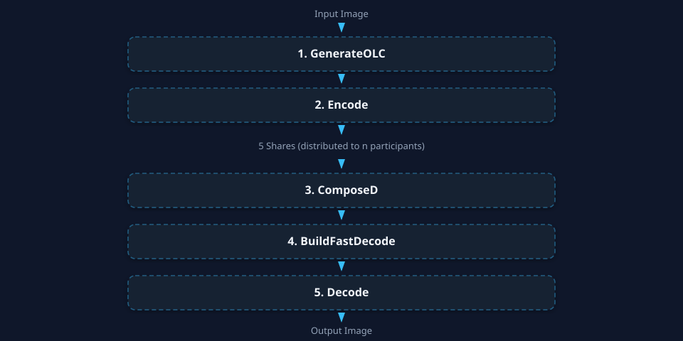

GPU Parallelization of Threshold Secret Sharing with Latin Cubes
GPU-parallel (k,n) TSS built on Latin Cubes. Five CUDA kernels with coalesced memory access eliminate the offline table-generation bottleneck and achieve 40×–150× speedups over optimized CPU baselines.